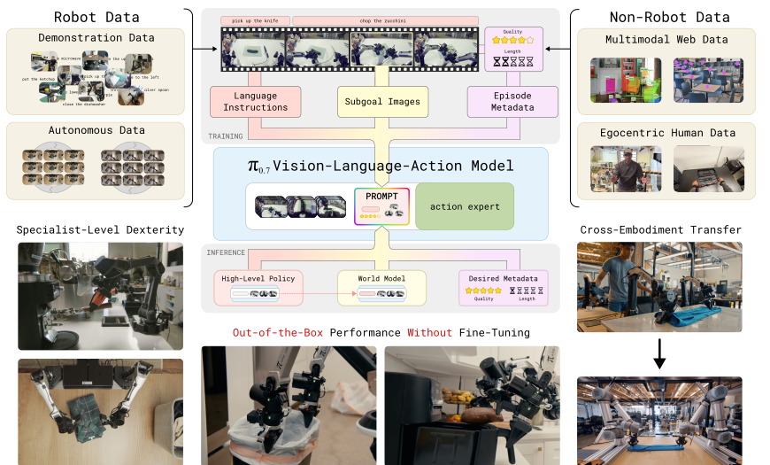
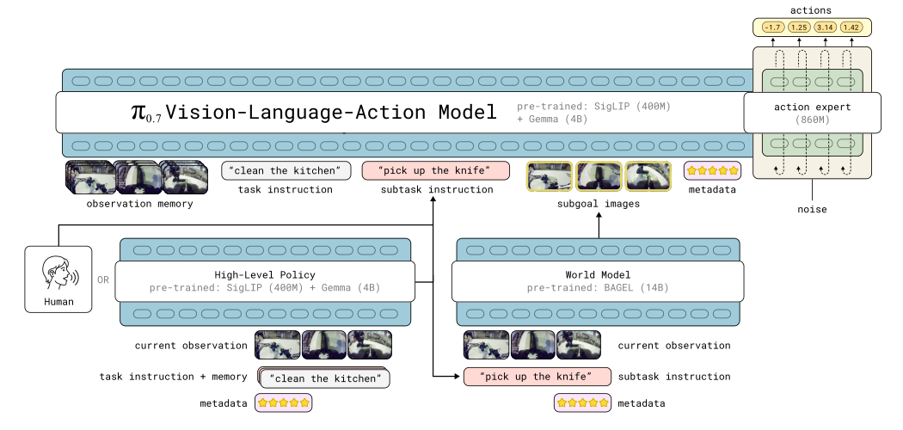

π0.7
A steerable generalist robotic foundation model with emergent capabilities.
π0.7은 하나의 범용 VLA가 여러 로봇·환경·작업에서 별도 fine-tuning 없이 높은 성능을 내도록 만든 모델이다. 핵심은 모델에게 “무엇을 할지”만 주지 않고, “어떤 방식으로 할지”까지 language, image, metadata로 자세히 알려 주는 diverse context conditioning이다.
Central Question
좋은 데이터와 나쁜 데이터를 함께 쓰면서, 원하는 행동 mode를 어떻게 고를까?
대규모 robot dataset에는 빠르고 깔끔한 성공 시연뿐 아니라, 느린 시연·실수·실패·기존 policy의 rollout도 섞여 있다. 이를 task 문장 하나로 학습하면 서로 다른 전략과 품질이 평균화되어 애매한 행동이 나올 수 있다. π0.7은 각 trajectory의 맥락을 prompt에 명시해 이 모호함을 해결한다.
What to do
전체 task와 다음 semantic subtask를 언어로 준다. 예: “put food on the table” → “pick up the plate of food”.
What success should look like
subgoal image가 가까운 미래의 원하는 장면을 제공해, 손·그리퍼·물체의 구체적인 목표 상태를 지정한다.
How to do it
speed, quality, mistake 같은 episode metadata와 control mode로 원하는 수행 방식과 전략을 지정한다.
Overview
다양한 data source를 풍부한 prompt로 하나의 VLA에 연결한다

Prompt Design
π0.6의 metadata를 완성된 multimodal prompt로 확장한다
π0.7은 모든 component를 항상 요구하지 않는다. 학습 중 각 component를 dropout해 두므로, 추론 때 가능한 정보만 조합해 사용할 수 있다.
Task + subtask instruction
전체 목표와 다음 subtask를 함께 준다. subtask는 learned high-level policy가 만들 수도 있고, 사람이 실시간 verbal coaching으로 줄 수도 있다.
Subgoal image
현재 관측과 subtask에서 lightweight world model이 생성한다. multi-view 미래 장면은 언어만으로 빠지기 쉬운 spatial·gripper detail을 보완한다.
Episode metadata
Speed는 episode 길이를 500-step 단위로 binning한 값, Quality는 1~5 점수, Mistake는 action segment에서 실수가 있었는지의 label이다.
Control mode
joint 또는 ee 텍스트 identifier를 prompt에 넣어 joint-level과 end-effector control을 지정한다.
Architecture
π0.6 + memory + world model
모델은 Gemma 3 기반 4B VLM backbone, MEM-style video history encoder, 860M flow-matching action expert로 구성된 약 5B parameter VLA다. 최대 네 개 camera의 history와 subgoal image를 보고 continuous action chunk를 생성한다.

History-aware observation
camera history는 temporal·spatial compression을 거쳐 고정 token 수로 표현된다. robot state도 π0.6처럼 text token으로 discretize하지 않고 linear projection으로 embedding한다.
Knowledge Insulation + FAST
VLM backbone은 FAST discrete action token과 다양한 multimodal data로 학습하고, action expert는 backbone activation을 보며 flow matching으로 continuous action을 생성한다. action expert gradient는 backbone으로 역전파되지 않는다.
50-step action chunk + RTC
action expert는 50개 action token을 함께 처리한다. 학습 시 0~12 step의 inference delay를 simulate하는 RTC recipe를 사용해, 실제 지연 속에서도 매끄러운 제어를 목표로 한다.
Training & Inference
학습 때는 넓게 배우고, 추론 때는 원하는 조건을 선택한다
Diverse data, annotated context
robot demonstration, autonomous rollout과 failure, human intervention, open-source robot data, egocentric human video, web multimodal data를 함께 학습한다. metadata가 각 example의 품질과 전략을 구분한다.
High-level subtask + world model
고수준 policy가 다음 subtask를 만들고, world model은 현재 관측·subtask·metadata에서 subgoal image를 생성한다. subtask가 바뀌거나 4초가 지나면 subgoal image를 새로 만든다.
Desired metadata prompting
추론 시 Quality는 5, Mistake는 false로 설정한다. Speed는 해당 task data에서 빠른 편인 15th percentile episode length로 설정해, 높은 품질·실수 없음·빠른 행동 mode를 선택한다.
논문은 prompt component dropout과 classifier-free guidance를 사용해 metadata 조건을 더 강하게 반영할 수도 있다고 설명한다.
Runtime Data Flow
실행 과정: 생각하고, 미래 모습을 만들고, 행동한다
π0.7은 매 순간 VLA 하나만 실행하는 구조가 아니다. 느린 semantic loop와 빠른 action loop, 그리고 비동기 world model이 함께 동작한다.
Observe: 현재 장면과 history를 읽는다
front/wrist camera의 현재 이미지와 최근 history, robot proprioception을 입력으로 만든다. 목표 task와 원하는 metadata도 함께 준비한다.
Plan: 다음 semantic subtask를 정한다
high-level policy가 관측·전체 목표·이전 subtask history에서 “pick up the knife” 같은 다음 subtask를 생성한다. 이 단계는 사람이 verbal coaching으로 대체할 수도 있다.
Imagine: subgoal image를 만든다
BAGEL 기반 world model이 현재 관측, subtask, metadata를 받아 “이 subtask가 잘 진행된 직후 장면”을 multi-view image로 생성한다. 이 작업은 action generation과 비동기로 진행된다.
Act: VLA가 continuous action chunk를 생성한다
VLA는 observation memory + task + subtask + 최신 subgoal image + metadata + control mode를 prompt로 받아, flow-matching action expert로 50-step action chunk를 생성한다.
Execute and refresh
50-step 전체를 기다리지 않고 15 또는 25 step만 실행한다. subtask가 바뀌거나 마지막 subgoal image 생성 뒤 4초가 지나면 image를 갱신하고, action chunk도 계속 새로 생성한다.
중요: world model이 image를 생성하는 동안에도 로봇은 멈추지 않는다. VLA는 그 시점에 준비된 가장 최신 subgoal image를 사용해 action을 이어 가므로, 긴 지연 없이 control loop를 유지한다.
Training Flow
학습 과정: trajectory에 “행동의 맥락”을 붙여서 함께 배운다
π0.7의 핵심은 좋은 demonstration만 골라 imitation learning을 하는 데 있지 않다. 서로 다른 품질·속도·전략의 데이터를 버리지 않고, 각 예시가 어떤 조건에서 나온 행동인지 context로 명시한 뒤 하나의 conditional policy로 학습한다.
Data mixture를 넓게 구성한다
고품질·저품질 robot demonstration, autonomous rollout과 failure, human intervention, 여러 embodiment, open-source robot data, egocentric human video, web VQA·localization·text data를 합친다. π*0.6 RL specialist가 실제 로봇에서 모은 rollout도 포함해 specialist의 능력을 generalist로 distill한다.
Trajectory를 segment로 자르고 context를 annotation한다
각 action segment에 전체 task, 다음 subtask, speed, quality, mistake, control mode를 붙인다. speed는 episode step 수를 500-step bin으로 바꾸고, quality 1~5와 segment-level mistake는 사람이 coarse annotation한다. 이 annotation이 failure와 저품질 data도 유용한 학습 예시로 바꾼다.
World model용 고품질 subset을 만든다
정확한 subtask label이 있는 특히 고품질 segment만 \(D_g\)로 골라, segment 마지막의 실제 multi-view frame을 future subgoal image 정답 \(g_t^\star=o_{t_{\mathrm{end}}}\)로 사용한다.
World model을 future image generator로 학습한다
BAGEL 14B image model에서 초기화한 \(g_\psi\)가 현재 관측 \(o_t\), subtask \(\hat{\ell}_t\), metadata \(m\)에서 \(g_t^\star\)를 생성하도록 conditional flow matching으로 학습한다. web·egocentric video도 함께 사용해 이미지 수준의 semantic/physical prior를 얻는다.
Low-level VLA를 action policy로 학습한다
π0.7은 observation history와 full context에서 50-step continuous action chunk를 예측한다. VLM backbone은 FAST discrete action token과 multimodal supervision으로, 860M action expert는 flow matching으로 continuous action으로 학습된다.
Generated subgoal과 prompt dropout으로 배포 조건을 맞춘다
VLA에는 실제 미래 image뿐 아니라 world model이 만든 subgoal image도 입력해 train-test mismatch를 줄인다. 또한 component를 일부러 제거해, 추론 때 사용 가능한 context 조합이 달라도 동작하게 만든다.
VLA policy objective
\(C_t\)는 task/subtask, subgoal image, metadata, control mode를 합친 prompt다. VLA는 관측 history와 이 context가 주어졌을 때 action chunk의 likelihood를 높인다.
World-model objective
world model은 현재 상태에서 subtask가 성공적으로 진행된 뒤의 future image를 conditional flow matching loss로 생성한다.
Prompt dropout의 정확한 비율
Subgoal image 제공
subgoal image는 action prediction을 너무 쉽게 만드는 inverse-dynamics shortcut이 될 수 있어, batch example의 25%에만 넣는다.
Subtask text 제거
subgoal image가 제공된 example에서는 30% 확률로 subtask text를 제거한다. image 자체가 더 풍부한 subtask 정보가 될 수 있음을 학습시키기 위해서다.
Metadata 전체 제거
metadata 전체를 15% 확률로 제거하고, Speed·Quality·Mistake 각 항목도 각각 5% 확률로 제거한다. Control mode는 제거하지 않는다.
Results & Takeaway
Specialist를 모방하는 generalist를 넘어, 새 조합을 수행한다
π0.7은 task-specific post-training 없이 espresso making, box building, diverse laundry folding 같은 높은 난도 task에서 π*0.6 RL specialist에 경쟁력 있는 성능을 보였고, diverse laundry와 box building에서는 throughput을 넘어섰다고 보고한다.
Out-of-the-box dexterity
단일 generalist policy가 specialist 수준의 정교한 manipulation을 수행한다.
Cross-embodiment transfer
빨래 접기를 학습하지 않은 UR5e bimanual robot으로 zero-shot transfer하는 결과를 제시한다.
Compositional task generalization
학습에서 보지 못한 appliance와 task 조합도 step-by-step coaching 또는 learned high-level policy로 수행한다. 예: sweet potato를 air fryer에 넣기.
한 줄 takeaway: π0.7의 주장은 더 큰 action model 자체보다, 다양한 경험을 “무엇을·어떻게·어떤 결과로”라는 풍부한 context와 함께 학습하면 범용 robot policy가 서로 다른 skill을 새롭게 조합할 수 있다는 것이다.
원문: π0.7: a Steerable Generalist Robotic Foundation Model with Emergent Capabilities ↗